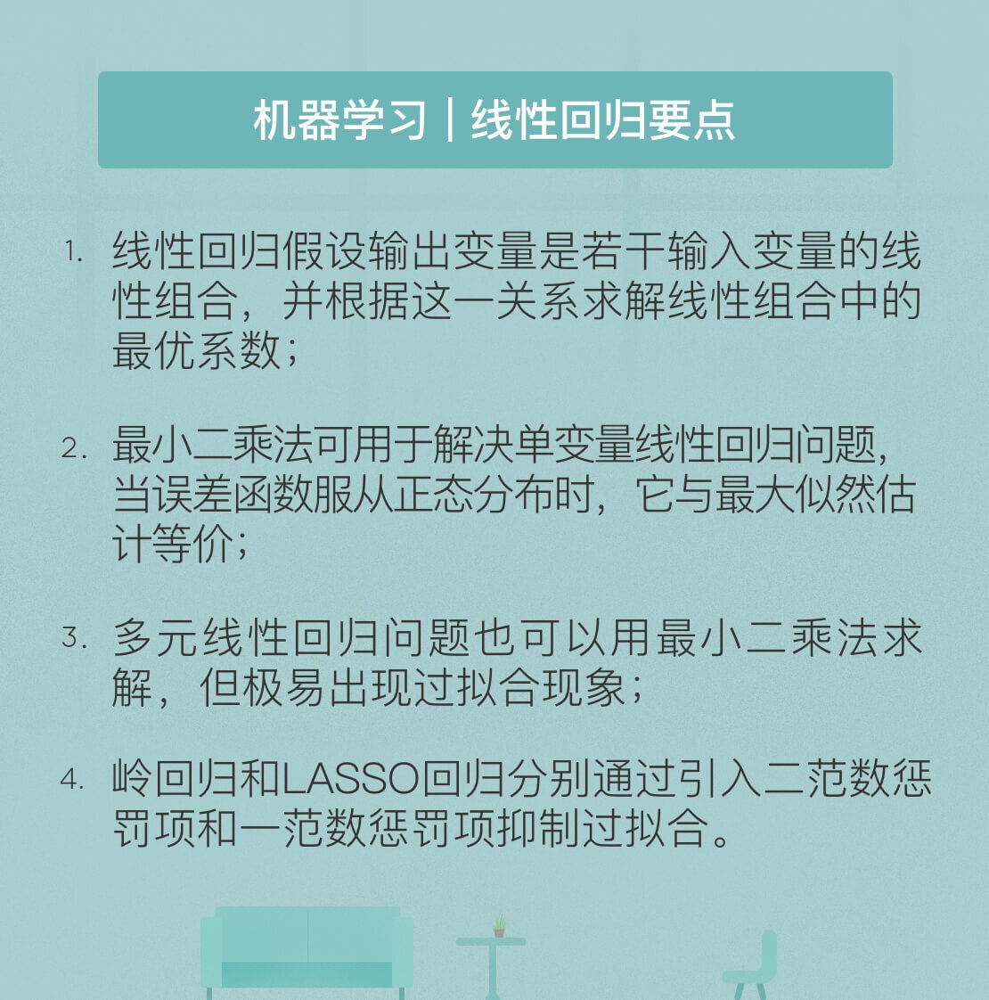

- 00 开篇词 人工智能：新时代的必修课.md.html
- 01 数学基础 九层之台，起于累土：线性代数.md.html
- 02 数学基础 月有阴晴圆缺，此事古难全：概率论.md.html
- 03 数学基础 窥一斑而知全豹：数理统计.md.html
- 04 数学基础 不畏浮云遮望眼：最优化方法.md.html
- 05 数学基础 万物皆数，信息亦然：信息论.md.html
- 06 数学基础 明日黄花迹难寻：形式逻辑.md.html
- 07 机器学习 数山有路，学海无涯：机器学习概论.md.html
- 08 机器学习 简约而不简单：线性回归.md.html
- 09 机器学习 大道至简：朴素贝叶斯方法.md.html
- 10 机器学习 衍化至繁：逻辑回归.md.html
- 11 机器学习 步步为营，有章可循：决策树.md.html
- 12 机器学习 穷则变，变则通：支持向量机.md.html
- 13 机器学习 三个臭皮匠，赛过诸葛亮：集成学习.md.html
- 14 机器学习 物以类聚，人以群分：聚类分析.md.html
- 15 机器学习 好钢用在刀刃上：降维学习.md.html
- 16 人工神经网络 道法自然，久藏玄冥：神经网络的生理学背景.md.html
- 17 人工神经网络 一个青年才俊的意外死亡：神经元与感知器.md.html
- 18 人工神经网络 左手信号，右手误差：多层感知器.md.html
- 19 人工神经网络 各人自扫门前雪：径向基函数神经网络.md.html
- 20 人工神经网络 看不见的手：自组织特征映射.md.html
- 21 人工神经网络 水无至清，人莫至察：模糊神经网络.md.html
- 22 深度学习 空山鸣响，静水流深：深度学习概述.md.html
- 23 深度学习 前方有路，未来可期：深度前馈网络.md.html
- 24 深度学习 小树不修不直溜：深度学习中的正则化.md.html
- 25 深度学习 玉不琢不成器：深度学习中的优化.md.html
- 26 深度学习 空竹里的秘密：自编码器.md.html
- 27 深度学习 困知勉行者勇：深度强化学习.md.html
- 28 深度学习框架下的神经网络 枯木逢春：深度信念网络.md.html
- 29 深度学习框架下的神经网络 见微知著：卷积神经网络.md.html
- 30 深度学习框架下的神经网络 昨日重现：循环神经网络.md.html
- 31 深度学习框架下的神经网络 左右互搏：生成式对抗网络.md.html
- 32 深度学习框架下的神经网络 三重门：长短期记忆网络.md.html
- 33 深度学习之外的人工智能 一图胜千言：概率图模型.md.html
- 34 深度学习之外的人工智能 乌合之众的逆袭：集群智能.md.html
- 35 深度学习之外的人工智能 授人以鱼不如授人以渔：迁移学习.md.html
- 36 深度学习之外的人工智能 滴水藏海：知识图谱.md.html
- 37 应用场景 你是我的眼：计算机视觉.md.html
- 38 应用场景 嘿, Siri：语音处理.md.html
- 39 应用场景 心有灵犀一点通：对话系统.md.html
- 40 应用场景 数字巴别塔：机器翻译.md.html
- 一键到达 人工神经网络复习课.md.html
- 一键到达 应用场景复习课.md.html
- 一键到达 数学基础复习课.md.html
- 一键到达 机器学习复习课.md.html
- 一键到达 深度学习之外的人工智能复习课.md.html
- 一键到达 深度学习复习课.md.html
- 一键到达 深度学习框架下的神经网络复习课.md.html
- 推荐阅读 我与人工智能的故事.md.html
- 新书 《裂变：秒懂人工智能的基础课》.md.html
- 直播回顾 机器学习必备的数学基础.md.html
- 第2季回归 这次我们来聊聊机器学习.md.html
- 结课 溯洄从之，道阻且长.md.html
- 课外谈 “人工智能基础课”之二三闲话.md.html
- （课外辅导）人工神经网络 拓展阅读参考书.md.html
- （课外辅导）数学基础 拓展阅读参考书.md.html
- （课外辅导）机器学习 拓展阅读参考书.md.html
- （课外辅导）深度学习 拓展阅读参考书.md.html
- 捐赠
08 机器学习 简约而不简单：线性回归
数学中的线性模型可谓“简约而不简单”：它既能体现出重要的基本思想，又能构造出功能更加强大的非线性模型。在机器学习领域，线性回归就是这样一类基本的任务，它应用了一系列影响深远的数学工具。
在数理统计中，回归分析是确定多种变量间相互依赖的定量关系的方法。线性回归假设输出变量是若干输入变量的线性组合，并根据这一关系求解线性组合中的最优系数。在众多回归分析的方法里，线性回归模型最易于拟合，其估计结果的统计特性也更容易确定，因而得到广泛应用。而在机器学习中，回归问题隐含了输入变量和输出变量均可连续取值的前提，因而利用线性回归模型可以对任意输入给出对输出的估计。
1875年，从事遗传问题研究的英国统计学家弗朗西斯·高尔顿正在寻找父代与子代身高之间的关系。在分析了1078对父子的身高数据后，他发现这些数据的散点图大致呈直线状态，即父亲的身高和儿子的身高呈正相关关系。而在正相关关系背后还隐藏着另外一个现象：矮个子父亲的儿子更可能比父亲高；而高个子父亲的儿子更可能比父亲矮。
受表哥查尔斯·达尔文的影响，高尔顿将这种现象称为“回归效应”，即大自然将人类身高的分布约束在相对稳定而不产生两极分化的整体水平，并给出了历史上第一个线性回归的表达式：y = 0.516x + 33.73，式中的y和x分别代表以英寸为单位的子代和父代的身高。
高尔顿的思想在今天的机器学习中依然保持着旺盛的生命力。假定一个实例可以用列向量\({\\bf x} = (x_1; x_2; \\cdots, x_n)\)表示，每个\(x_i\)代表了实例在第i个属性上的取值，线性回归的作用就是习得一组参数\(w_i, i = 0, 1, \\cdots, n\)，使预测输出可以表示为以这组参数为权重的实例属性的线性组合。如果引入常量\(x_0 = 1\)，线性回归试图学习的模型就是
\[f({\\bf x}) = {\\bf w} ^ T {\\bf x} = \\sum\\limits_{i = 0}^{n} w_i \\cdot x_i \]
当实例只有一个属性时，输入和输出之间的关系就是二维平面上的一条直线；当实例的属性数目较多时，线性回归得到的就是n+1维空间上的一个超平面，对应一个维度等于n的线性子空间。
在训练集上确定系数\(w_i\)时，预测输出\(f({\\bf x})\)和真实输出\(y\)之间的误差是关注的核心指标。在线性回归中，这一误差是以均方误差来定义的。当线性回归的模型为二维平面上的直线时，均方误差就是预测输出和真实输出之间的欧几里得距离，也就是两点间向量的\(L ^ 2\)范数。而以使均方误差取得最小值为目标的模型求解方法就是最小二乘法，其表达式可以写成
\[{\\mathbf{w}}^\* = \\mathop {\\arg \\min }\\limits_{\\mathbf{w}} \\sum\\limits_{k = 1} {{{({{\\mathbf{w}}^T}{{\\mathbf{x}}_k} - {y_k})}^2}} \]
\[= \\mathop {\\arg \\min }\\limits_{\\mathbf{w}} \\sum\\limits_{k = 1} || y_k - \\mathbf{w}^T \\mathbf{x}_k ||^2 \]
式中每个\({\\bf x}_k\)代表训练集中的一个样本。在单变量线性回归任务中，最小二乘法的作用就是找到一条直线，使所有样本到直线的欧式距离之和最小。
说到这里，问题就来了：凭什么使均方误差最小化的参数就是和训练样本匹配的最优模型呢？
这个问题可以从概率论的角度阐释。线性回归得到的是统计意义上的拟合结果，在单变量的情形下，可能每一个样本点都没有落在求得的直线上。
对这个现象的一种解释是回归结果可以完美匹配理想样本点的分布，但训练中使用的真实样本点是理想样本点和噪声叠加的结果，因而与回归模型之间产生了偏差，而每个样本点上噪声的取值就等于\(y_k - f(\\mathbf{x}_k)\)。
假定影响样本点的噪声满足参数为\((0, \\sigma ^ 2)\)的正态分布（还记得正态分布的概率密度公式吗？），这意味着噪声等于0的概率密度最大，幅度（无论正负）越大的噪声出现的概率越小。在这种情形下，对参数\(\\mathbf{w}\)的推导就可以用最大似然的方式进行，即在已知样本数据及其分布的条件下，找到使样本数据以最大概率出现的假设。
单个样本\(\\mathbf{x}_k\)出现的概率实际上就是噪声等于\(y_k - f(\\mathbf{x}_k)\)的概率，而相互独立的所有样本同时出现的概率则是每个样本出现概率的乘积，其表达式可以写成
\[p({{\\mathbf{x}}_1},{{\\mathbf{x}}_2}, \\cdots {{\\mathbf{x}}_k}, \\cdots |{\\mathbf{w}}) =\]
\[ \\prod\\limits_k {\\frac{1}{{\\sqrt {2\\pi } \\sigma }}} \\exp \[ - \\frac{1}{{2{\\sigma ^2}}}{({y_k} - {{\\mathbf{w}}^T}{{\\mathbf{x}}_k})^2}\]\]
而最大似然估计的任务就是让以上表达式的取值最大化。出于计算简便的考虑，上面的乘积式可以通过取对数的方式转化成求和式，且取对数的操作并不会影响其单调性。经过一番运算后，上式的最大化就可以等效为\(\\sum\\limits_{k} (y_k - \\mathbf{w} ^ T \\mathbf{x}_k) ^ 2\)的最小化。这不就是最小二乘法的结果么？
因此，对于单变量线性回归而言，在误差函数服从正态分布的情况下，从几何意义出发的最小二乘法与从概率意义出发的最大似然估计是等价的。
确定了最小二乘法的最优性，接下来的问题就是如何求解均方误差的最小值。在单变量线性回归中，其回归方程可以写成\(y = w_1x + w_0\)。根据最优化理论，将这一表达式代入均方误差的表达式中，并分别对\(w_1\)和\(w_0\)求偏导数，令两个偏导数均等于0的取值就是线性回归的最优解，其解析式可以写成
\[ w_1 = \\dfrac{\\sum\\limits_{k = 1}^m y_k(x_k - \\frac{1}{m} \\sum\\limits_{k = 1}^m x_k)}{\\sum\\limits_{k = 1}^m x_k^2 - \\frac{1}{m} (\\sum\\limits_{k = 1}^m x_k) ^ 2}\]
\[w_0 = \\dfrac{1}{m} \\sum\\limits_{k = 1}^m (y_k - w_1x_k)\]
单变量线性回归只是一种最简单的特例。子代的身高并非仅仅由父母的遗传基因决定，营养条件、生活环境等因素都会产生影响。当样本的描述涉及多个属性时，这类问题就被称为多元线性回归。
多元线性回归中的参数\(\\mathbf{w}\)也可以用最小二乘法进行估计，其最优解同样用偏导数确定，但参与运算的元素从向量变成了矩阵。在理想的情况下，多元线性回归的最优参数为
\[ {\\mathbf{w}}^\* = (\\mathbf{X} ^ T \\mathbf{X}) ^ {-1} \\mathbf{X} ^ T \\mathbf{y} \]
式中的\(\\mathbf{X}\)是由所有样本\({\\bf x} = (x_0; x_1; x_2; \\cdots, x_n)\)的转置共同构成的矩阵。但这一表达式只在矩阵\((\\mathbf{X} ^ T \\mathbf{X})\)的逆矩阵存在时成立。在大量复杂的实际任务中，每个样本中属性的数目甚至会超过训练集中的样本总数，此时求出的最优解\({\\mathbf{w}}^\*\)就不是唯一的，解的选择将依赖于学习算法的归纳偏好。
但不论采用怎样的选取标准，存在多个最优解都是无法改变的事实，这也意味着过拟合的产生。更重要的是，在过拟合的情形下，微小扰动给训练数据带来的毫厘之差可能会导致训练出的模型谬以千里，模型的稳定性也就无法保证。
要解决过拟合问题，常见的做法是正则化，即添加额外的惩罚项。在线性回归中，正则化的方式根据其使用惩罚项的不同可以分为两种，分别是“岭回归”和“LASSO回归”。
在机器学习中，岭回归方法又被称为“参数衰减”，于20世纪40年代由前苏联学者安德烈·季霍诺夫提出。当然，彼时机器学习尚未诞生，季霍诺夫提出这一方法的主要目的是解决矩阵求逆的稳定性问题，其思想后来被应用到正则化中，形成了今天的岭回归。
岭回归实现正则化的方式是在原始均方误差项的基础上添加一个待求解参数的二范数项，即最小化的对象变为\(|| y_k - \\mathbf{w}^T \\mathbf{x}_k || ^ 2 + || \\Gamma \\mathbf{w}|| ^ 2\)，其中的\(\\Gamma\)被称为季霍诺夫矩阵，通常可以简化为一个常数。
从最优化的角度看，二范数惩罚项的作用在于优先选择范数较小的\(\\mathbf{w}\)，这相当于在最小均方误差之外额外添加了一重关于最优解特性的约束条件，将最优解限制在高维空间内的一个球里。岭回归的作用相当于在原始最小二乘的结果上做了缩放，虽然最优解中每个参数的贡献被削弱了，但参数的数目并没有变少。
LASSO回归的全称是“最小绝对缩减和选择算子”（Least Absolute Shrinkage and Selection Operator），由加拿大学者罗伯特·提布什拉尼于1996年提出。与岭回归不同的是，LASSO回归选择了待求解参数的一范数项作为惩罚项，即最小化的对象变为\(|| y_k - \\mathbf{w}^T \\mathbf{x}_k || ^ 2 + \\lambda ||\\mathbf{w}||_1\)，其中的\(\\lambda\)是一个常数。
与岭回归相比，LASSO回归的特点在于稀疏性的引入。它降低了最优解\(\\mathbf{w}\)的维度，也就是将一部分参数的贡献削弱为0，这就使得\(\\mathbf{w}\)中元素的数目大大小于原始特征的数目。
这或多或少可以看作奥卡姆剃刀原理的一种实现：当主要矛盾和次要矛盾同时存在时，优先考虑的必然是主要矛盾。虽然饮食、环境、运动等因素都会影响身高的变化，但决定性因素显然只存在在染色体上。值得一提的是，引入稀疏性是简化复杂问题的一种常用方法，在数据压缩、信号处理等其他领域中亦有广泛应用。
从概率的角度来看，最小二乘法的解析解可以利用正态分布以及最大似然估计求得，这在前文已有说明。岭回归和LASSO回归也可以从概率的视角进行阐释：岭回归是在\(w_i\)满足正态先验分布的条件下，用最大后验概率进行估计得到的结果；LASSO回归是在\(w_i\)满足拉普拉斯先验分布的条件下，用最大后验概率进行估计得到的结果。
但无论岭回归还是LASSO回归，其作用都是通过惩罚项的引入抑制过拟合现象，以训练误差的上升为代价，换取测试误差的下降。将以上两种方法的思想结合可以得到新的优化方法，在此就不做赘述了。
今天我和你分享了机器学习基本算法之一的线性回归的基本原理，其要点如下：
- 线性回归假设输出变量是若干输入变量的线性组合，并根据这一关系求解线性组合中的最优系数；
- 最小二乘法可用于解决单变量线性回归问题，当误差函数服从正态分布时，它与最大似然估计等价；
- 多元线性回归问题也可以用最小二乘法求解，但极易出现过拟合现象；
- 岭回归和LASSO回归分别通过引入二范数惩罚项和一范数惩罚项抑制过拟合。
在深度学习大行其道的今天，巨量的参数已经成为常态。在参数越来越多，模型越来越复杂的趋势下，线性回归还能发挥什么样的作用呢？
欢迎发表你的观点。

© 2019 - 2023 Liangliang Lee. Powered by gin and hexo-theme-book.